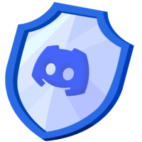
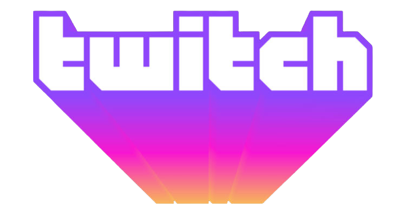

Jeesung Lee

Welcome to my website!
I'm a high school freshman in South Korea who's been developing computer programs for 6 years.
During this time, I learned a lot of different languages, such as Ruby,
Java, Javascript,
C#, C++,
Python, and Elixir.
Because of my limitless ambition in coding, I have started diverse kinds of projects over time.
These days, I'm working on AI products on different fields.
Projects
WatchDog Discord Bot

WatchDog is a Discord bot that blocks spam messages and
restricted advertisments in various discord servers like an online shield.
It's currently used in over 200 discord servers. From April 1st, 2021, the ownership
of WatchDog has been transferred to InsanePhin.
Siro Twitch Bot

SiroBot is a Twitch util bot that records chats,
manage users, and respond on custom commands. It is still in
developing process, but I'm looking forward to build a neural network
that manages chats automatically.